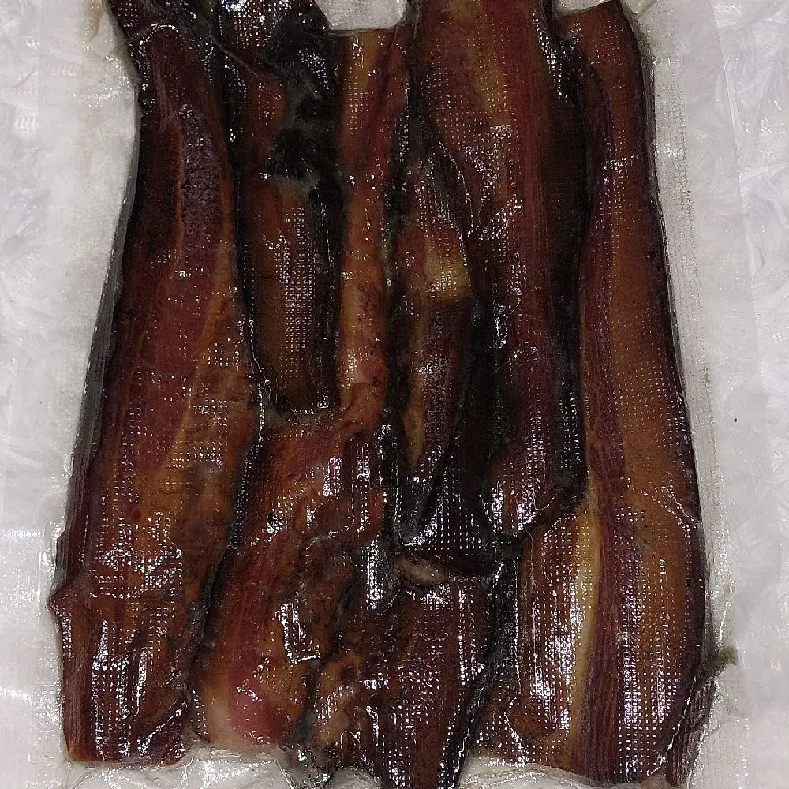
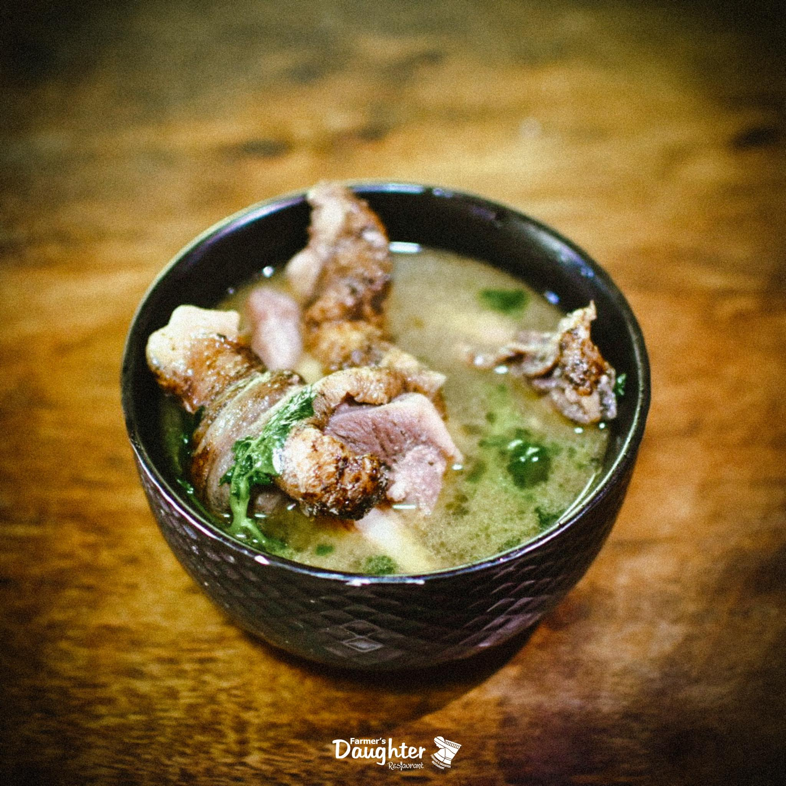
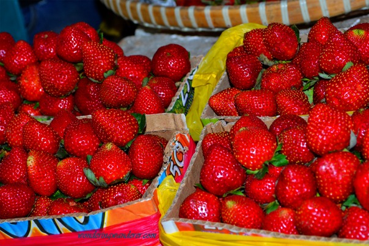
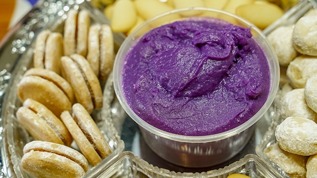
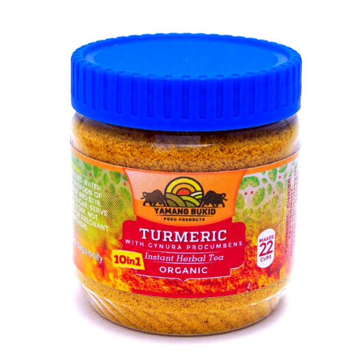
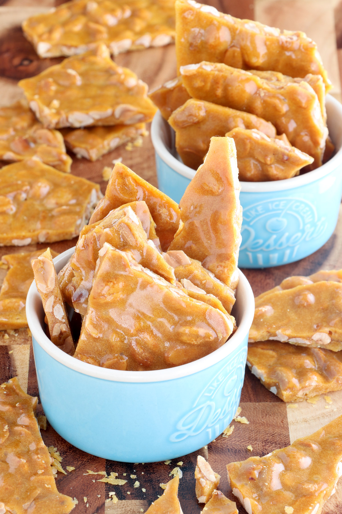
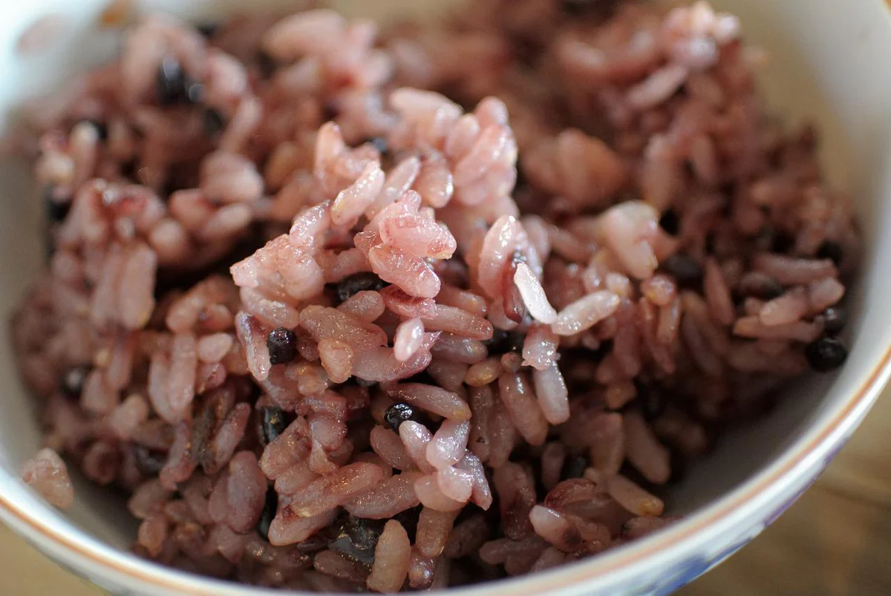
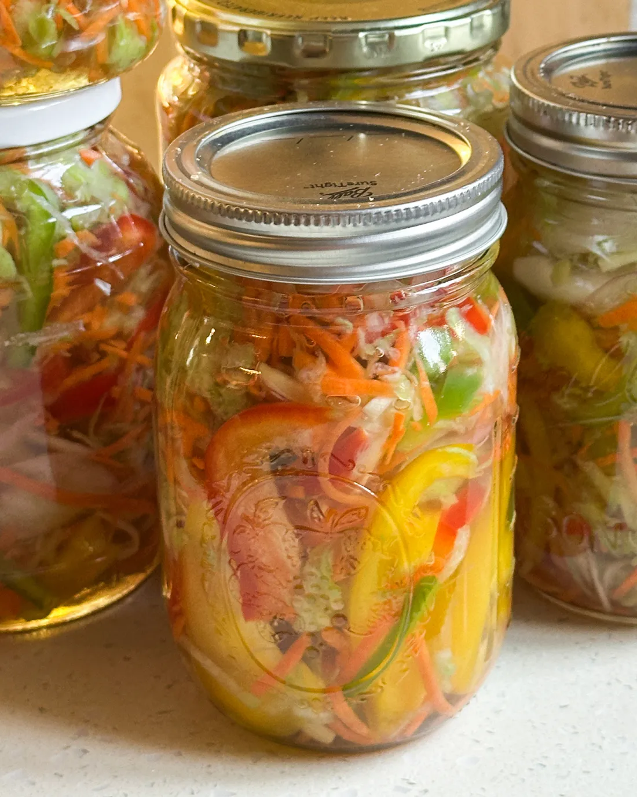
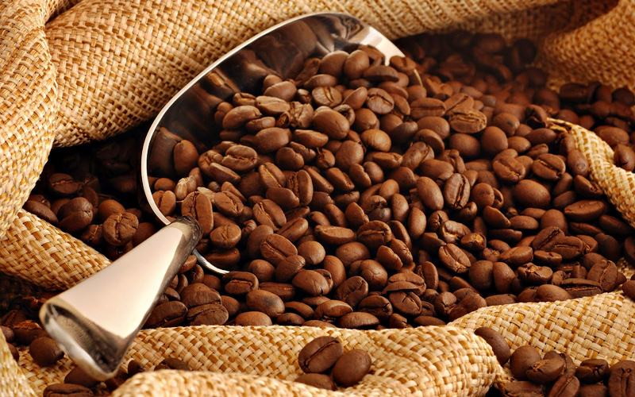

From pine-smoked meats to fresh strawberry jams — the flavors of Benguet are as rich as its mountains.
Indigenous flavors crafted from the highlands' bounty

Benguet's pride — native pork or carabao meat cured with salt and smoked over pine wood for days. The result is a deeply flavorful, smoky meat with a firm texture unique to the Cordillera highlands. Often served with rice or as a pulutan, kiniing carries the soul of Ibaloi cooking in every bite.
Public markets in Bokod & La Trinidad; local eateries along Km. 52, Kennon Road

A sacred Cordilleran dish prepared through a traditional ritual — chicken is slow-cooked in a broth with etag (salted cured pork) and local vegetables. The smoky depth of the broth, enriched by etag, creates a complex flavor unlike any other highland stew. Pinikpikan is more than a meal; it is a cultural ceremony passed down through generations.
Traditional Ibaloi households; select Cordilleran restaurants in La Trinidad and Baguio City
Sweeter, fresher, and straight from the farm

La Trinidad's famous strawberries processed into jams, pastries, wine, and fresh pies. Sweet, vibrant, and bursting with highland freshness — the perfect pasalubong.

Thick, creamy purple yam jam slow-cooked to perfection. Tuba's version is particularly famous — smooth, rich, and made from locally grown ube with a deep violet hue.

Brewed from indigenous highland plants like walis, lagundi, and oregano grown at high altitude. Warming, aromatic, and soothing — a highland staple to ward off the cold mountain air.

Crunchy golden peanut brittle and crumbly polvoron are beloved Benguet snacks, often wrapped in colorful cellophane and sold by the bag as the most popular souvenir in the highlands.

Cultivated by the Kankanaey people of Kibungan for centuries, this nutty, slightly chewy red rice is organic, unpolished, and packed with natural nutrients — a staple of Benguet highland cuisine.
A milky, mildly sweet rice wine fermented by the Ibaloi and Kankanaey peoples. Traditionally served at rituals and festivals, tapuey is smooth, slightly alcoholic, and deeply tied to Benguet's living cultural heritage.

Chayote, sayote tops, pechay, and carrots from Buguias' sprawling farms are transformed into crisp, tangy pickles and fresh salads. A celebration of the "Salad Bowl of the Philippines" at its finest.

Grown at elevation in Atok and Kibungan, Benguet Arabica is internationally recognized for its bright acidity, floral notes, and clean finish. One of the Philippines' finest specialty coffees.
Plan your food journey through Benguet's markets, farms, and local eateries. We'll help you discover the best bites.